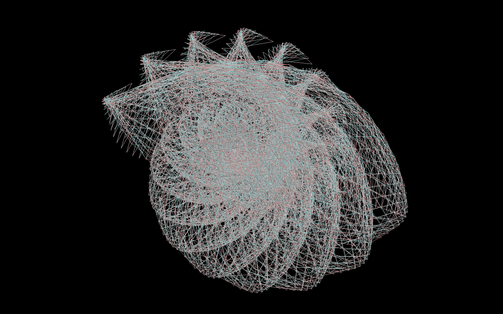

Whirlpool
openFrameworksによって描かれた、渦潮のグラフィックス。渦を巻きながら激しく流れる海水の流れに着想を得て制作された。周期的な数式によって制御されており、海のように色や形を変化させながら廻り続ける。
Artist: Yuta Morofuji
openFrameworksによって描かれた、渦潮のグラフィックス。渦を巻きながら激しく流れる海水の流れに着想を得て制作された。周期的な数式によって制御されており、海のように色や形を変化させながら廻り続ける。
Artist: Yuta Morofuji